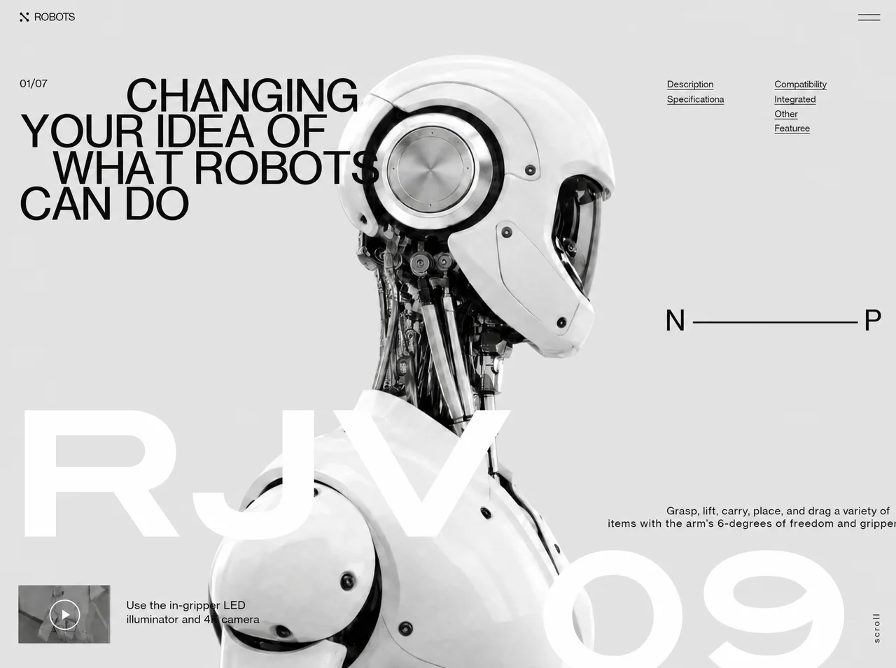

NEX Robotics
Technologytechnologyyilai-ai 公开页面
收录时间：2026-09-02正文：35,278 字符

本地预览图 · webp
完整提示词
Build a single self-contained HTML file (no build step, no frameworks, no external JS
libraries) that reproduces the "RJV-09" robot hero page exactly as specified below.
Everything — CSS, markup, and three vanilla-JS IIFEs — lives in that one file. The only
external requests are two font stylesheets and three images.
═══════════════════════════════════════════════════════════════════════════════
0. ASSETS — use these EXACT URLs verbatim
═══════════════════════════════════════════════════════════════════════════════
FONTS — both <link> tags go in <head>, before the <style>:
<link href="https://db.onlinewebfonts.com/c/65a40d16161c5040b3ae31036979a1db?family=ITC+Blair+W04+Bold" rel="stylesheet">
<link href="https://db.onlinewebfonts.com/c/6e47ef470dd19698c911332a9b4d1cf4?family=Neue+Haas+Grotesk+Text+Pro" rel="stylesheet">
Declared family names are exactly "ITC Blair W04 Bold" and "Neue Haas Grotesk Text Pro".
BOTH ship a single face at font-weight:normal. Therefore NEVER request weight 800/750/700
from either — that only triggers a synthetic bold on top of an already-bold design.
Display face = ITC Blair W04 Bold -> the RJV / 09 wordmark ONLY.
Text face = Neue Haas Grotesk Text Pro -> body, headline, nav, captions, everything else.
Fallback stack for both: Helvetica, Arial, sans-serif.
IMAGES:
BASE_HERO_IMG (light/white robot, 16:9, centred on a flat #E7E7E7 ground):
https://d8j0ntlcm91z4.cloudfront.net/user_38xzZboKViGWJOttwIXH07lWA1P/hf_20260826_125315_3aa52299-a4de-4c7d-b0d4-19527591eae7.png
REVEAL_IMG (same robot/pose/framing/ground, restyled matte-black + gunmetal grey with
cyan glow seams — this is what the spotlight reveals):
https://d8j0ntlcm91z4.cloudfront.net/user_38xzZboKViGWJOttwIXH07lWA1P/hf_20260826_151234_c1af372b-3eeb-47a2-b1b4-5ae98f92e167.png
THUMB_IMG (in-gripper camera still, inside the play button):
https://d8j0ntlcm91z4.cloudfront.net/user_38xzZboKViGWJOttwIXH07lWA1P/hf_20260826_125021_b092924a-9fc3-4368-b996-38d281b4cdd1.png
THERE IS NO VIDEO ON THIS PAGE. There is no CloudFront video URL, no .mp4, no .m3u8.
The play button is THUMB_IMG plus a decorative SVG glyph. Do not add a <video> element
or a player of any kind.
LOCAL (optional, portrait only): assets/robot-rjv09.webp — a transparent-background robot
cut-out used ONLY by the mobile layout. Give it onerror="this.style.display='none'" so the
file stays standalone: without it, portrait falls back to flat ground + spotlight reveal,
which is the intended portrait behaviour anyway.
═══════════════════════════════════════════════════════════════════════════════
1. DOCUMENT HEAD
═══════════════════════════════════════════════════════════════════════════════
<!DOCTYPE html>, <html lang="en">, charset utf-8.
<meta name="viewport" content="width=device-width,initial-scale=1,viewport-fit=cover">
<title>RJV-09 — Changing your idea of what robots can do</title> (— is an em dash)
═══════════════════════════════════════════════════════════════════════════════
2. THE SCALE SYSTEM — the core architecture, implement literally
═══════════════════════════════════════════════════════════════════════════════
The desktop composition is authored against a 1280 x 712 reference grid. One token, --k,
converts a design unit into CSS px. It never exceeds the width budget (the grid is never
compressed) and never exceeds the height budget (nothing is ever cropped). Because the
ground is a flat fill and the robot bleeds off the bottom edge, surplus height is simply
more background — never a letterbox bar.
:root{
--kw: calc(100vw / 1280);
--kh: calc(100vh / 712);
--k: min(var(--kw), var(--kh));
--kr: min(var(--kh), calc(var(--k) * 1.45)); /* robot: fills height, capped */
--kt: var(--k); /* UI/type scale: == --k until tablet */
--slack: calc(100% - 712 * var(--k)); /* surplus height, vertical use only */
--bg:#E7E7E7;
}
@supports (height:100dvh){ :root{--kh: calc(100dvh / 712)} }
*,*::before,*::after{box-sizing:border-box}
html,body{margin:0;padding:0;height:100%;overflow:hidden;background:var(--bg)}
body{font-family:'Neue Haas Grotesk Text Pro',Helvetica,Arial,sans-serif;-webkit-font-smoothing:antialiased}
img{-webkit-user-drag:none;user-select:none}
:focus-visible{outline:2px solid #1A1A1A;outline-offset:3px}
═══════════════════════════════════════════════════════════════════════════════
3. LAYER STACK
═══════════════════════════════════════════════════════════════════════════════
#viewport{position:fixed;inset:0;overflow:hidden;
background:var(--bg) url('BASE_HERO_IMG') center/cover no-repeat}
#spotlight{position:absolute;inset:0;
background:url('REVEAL_IMG') center/cover no-repeat;pointer-events:none;
-webkit-mask-repeat:no-repeat;mask-repeat:no-repeat;
-webkit-mask-size:100% 100%;mask-size:100% 100%}
DOM order inside #viewport: <div id="spotlight"></div>, then <div id="stage">…</div>,
then <div id="mobile">…</div>. #spotlight sits BELOW the text layers on purpose, so the
reveal happens behind the type and the copy stays crisp.
#stage{position:absolute;inset:0;overflow:hidden}
.tx{position:absolute;white-space:nowrap;line-height:1;font-weight:400;z-index:3}
.hl{position:absolute;left:0;right:0;overflow:hidden;pointer-events:none;z-index:3}
.wm{position:absolute;white-space:nowrap;line-height:1;color:#fff;transform-origin:0 0;z-index:2}
#robot{position:absolute;z-index:1;
width:calc(587.69 * var(--kr));height:calc(801.65 * var(--kr));
left:calc(50% + 34.845 * var(--k) - 293.845 * var(--kr));
top:calc(100% - 697 * var(--kr))}
IMPORTANT: the desktop robot is baked into BASE_HERO_IMG, so <img id="robot"> stays in the
DOM (the entrance timeline targets it) but carries inline style="display:none".
═══════════════════════════════════════════════════════════════════════════════
4. DESKTOP MARKUP + EXACT POSITIONS (all inside #stage)
═══════════════════════════════════════════════════════════════════════════════
4a. WHITE WORDMARK — five .wm spans with data-g attributes, ITC Blair W04 Bold.
ALL five: font-size:calc(244.9 * var(--k)); color #fff; transform:scaleX(1).
CRITICAL: scaleX MUST be 1. Do not reintroduce the 1.06505/1.278/1.11583/1.2 stretches
from older revisions — those compensated for narrower substitute faces, and applying
them to Blair (a genuinely wide face) makes every glyph pair collide.
The anchors below are derived from Blair's real advance widths at ZERO added tracking:
data-g="gR" "R" left:calc(11 * var(--k)) top:calc(100% - 388 * var(--k))
data-g="gJ" "J" left:calc(269 * var(--k)) top:calc(100% - 388 * var(--k))
data-g="gV" "V" left:calc(473 * var(--k)) top:calc(100% - 388 * var(--k))
data-g="g0" "0" left:calc(100% - 530 * var(--k)) top:calc(100% - 187 * var(--k))
data-g="g9" "9" left:calc(100% - 295 * var(--k)) top:calc(100% - 187 * var(--k))
Each carries inline font-family:'ITC Blair W04 Bold'.
R and 9 are the fixed anchors (left-most and right-most); J, V and 0 are derived.
4b. <img id="robot" alt="RJV-09 humanoid robot in three-quarter profile"
src="assets/robot-rjv09.webp" style="display:none">
4c. <svg id="logomark" viewBox="0 0 13 14" aria-hidden="true"> — four dots + a diagonal:
<path d="M2.1 2.1 L10.6 10.1" stroke="#2B2B2B" stroke-width="2.4" fill="none"/>
<g fill="#2B2B2B"><circle cx="1.9" cy="1.9" r="1.9"/><circle cx="11.1" cy="1.9" r="1.9"/>
<circle cx="1.9" cy="12.1" r="1.9"/><circle cx="11.1" cy="12.1" r="1.9"/></g>
#logomark{position:absolute;z-index:3;left:calc(31 * var(--kt));top:calc(23 * var(--kt));
width:calc(13 * var(--kt));height:calc(14 * var(--kt))}
4d. BRAND, data-k="brand", text "ROBOTS":
left:calc(51 * var(--kt));top:calc(23 * var(--kt));font-size:calc(15.1 * var(--kt));
letter-spacing:-0.0662em;color:#2B2B2B
4e. BURGER — <details id="menu"><summary aria-label="Menu" role="button"></summary>
<div id="menupanel"><div class="mp-col"><a>Description</a><a>Specifications</a></div>
<div class="mp-col"><a>Compatibility</a><a>Integrated</a><a>Other</a><a>Features</a></div>
</div></details>
#menu{position:absolute;z-index:6;left:calc(100% - 65 * var(--kt));top:calc(25.9 * var(--kt));
pointer-events:none} /* inert on desktop — the six links are visible */
#menu>summary{display:block;list-style:none;cursor:default;
width:calc(33 * var(--kt));height:calc(8.6 * var(--kt));
background:linear-gradient(#3A3A3A 0 0) top/calc(33 * var(--kt)) calc(1.6 * var(--kt)) no-repeat,
linear-gradient(#3A3A3A 0 0) bottom/calc(33 * var(--kt)) calc(1.6 * var(--kt)) no-repeat}
#menu>summary::-webkit-details-marker{display:none}
#menu>summary::marker{content:''}
#menupanel{display:none} /* desktop only */
4f. COUNTER, data-k="counter", text "01/07":
left:calc(31 * var(--kt));top:calc(118 * var(--kt));font-size:calc(15.1 * var(--kt));
letter-spacing:0em;color:#3A3A3A
4g. HEADLINE — one <h1 style="margin:0;font-weight:400"
aria-label="Changing your idea of what robots can do">.
Inside: FOUR .hl line-clip wrappers, each holding per-letter .tx spans that are
aria-hidden="true" and keyed data-k="L01".."L33". Write the spans back-to-back with NO
whitespace between them.
EVERY letter span: top:0; font-size:calc(61.73 * var(--kt)); letter-spacing:0em;
color:#111111; -webkit-text-stroke:0.0138em #111111.
Each .hl: height:calc(61.73 * var(--kt)), tops as listed.
LEFT values are left:calc(N * var(--kt)) with N below. These are derived from Neue Haas
Grotesk Text Pro's real advance widths, then tightened by 1.5 design units per step
cumulatively (so each line's FIRST letter keeps its original indent and the tightening
accumulates rightward). Word gaps use the font's own space advance (16.4u) before the
tightening is applied.
LINE 1 top:calc(111 * var(--kt)) "CHANGING"
C181 H227 A271 N313 G356 I404 N418 G462
LINE 2 top:calc(161.7 * var(--kt)) "YOUR IDEA OF"
Y32 O73 U122 R164 | I222 D237 E280 A320 | O378 F428
LINE 3 top:calc(213.5 * var(--kt)) "WHAT ROBOTS"
W77 H136 A179 T222 | R276 O319 B368 O409 T458 S498
LINE 4 top:calc(265 * var(--kt)) "CAN DO"
C30 A76 N117 | D178 O221
(The | marks show where a word break falls; there are no space characters in the markup.)
4h. SIX NAV LINKS — <a class="tx nav" data-k="nv1".."nv6" href="#">.
All: font-size:calc(13.4 * var(--kt)); color:#333333.
nv1 Description left:calc(100% - 336 * var(--kt)) top:calc(118 * var(--kt)) ls -0.0373em
nv2 Specifications left:calc(100% - 336 * var(--kt)) top:calc(139 * var(--kt)) ls -0.0402em
nv3 Compatibility left:calc(100% - 184 * var(--kt)) top:calc(118 * var(--kt)) ls -0.0373em
nv4 Integrated left:calc(100% - 184 * var(--kt)) top:calc(139 * var(--kt)) ls -0.0332em
nv5 Other left:calc(100% - 184 * var(--kt)) top:calc(160 * var(--kt)) ls -0.0373em
nv6 Features left:calc(100% - 184 * var(--kt)) top:calc(181 * var(--kt)) ls -0.0533em
.nav{text-decoration:underline;text-decoration-thickness:.0746em;
text-underline-offset:.1866em;text-decoration-color:#5A5A5A}
a.nav{color:inherit}
4i. PREV/NEXT — data-k="npn" "N", #nprule, data-k="npp" "P".
npn: left:calc(100% - 339 * var(--kt)); top:calc(327 * var(--kt) + var(--slack) * .5);
font-size:calc(39.8 * var(--kt));letter-spacing:0em;color:#1A1A1A
npp: left:calc(100% - 57 * var(--kt)); top: same as npn; same type
#nprule{position:absolute;z-index:3;left:calc(100% - 299 * var(--kt));
top:calc(347.6 * var(--kt) + var(--slack) * .5);
width:calc(233 * var(--kt));height:calc(1.8 * var(--kt));background:#1A1A1A}
4j. BODY COPY — one <p style="margin:0"> with two .tx spans, colour #1F1F1F,
font-size:calc(15.1 * var(--kt)):
data-k="bd1" "Grasp, lift, carry, place, and drag a variety of"
left:calc(100% - 337 * var(--kt)); top:var(--bd1-top,calc(100% - 218 * var(--kt)));
letter-spacing:0.0183em
data-k="bd2" "items with the arm's 6-degrees of freedom and gripper" (curly apostrophe)
left:calc(100% - 420 * var(--kt)); top:var(--bd2-top,calc(100% - 200 * var(--kt)));
letter-spacing:0.0408em
4k. PLAY BUTTON (static image, NOT a video):
<button id="thumb" aria-label="Play in-gripper camera clip">
<img alt="" src="THUMB_IMG"></button>
<svg id="play" viewBox="0 0 43 43" aria-hidden="true">
<circle cx="21.5" cy="21.5" r="20.75" fill="none" stroke="#fff" stroke-width="1.5"/>
<path d="M18.6 15.2 L28.3 21.5 L18.6 27.8 Z" fill="#fff"/></svg>
#thumb{position:absolute;z-index:3;left:calc(30 * var(--kt));top:calc(100% - 105 * var(--kt));
width:calc(131 * var(--kt));height:calc(82 * var(--kt));overflow:hidden;
background:#9a9a9a;border:0;padding:0;cursor:pointer}
#thumb img{width:calc(132 * var(--kt));height:calc(83 * var(--kt));
margin:calc(-3 * var(--kt)) 0 0 calc(-3 * var(--kt));object-fit:cover;display:block}
#play{position:absolute;z-index:4;left:calc(74 * var(--kt));top:calc(100% - 85 * var(--kt));
width:calc(43 * var(--kt));height:calc(43 * var(--kt));pointer-events:none}
Captions: data-k="cp1" "Use the in-gripper LED" left:calc(182 * var(--kt))
top:calc(100% - 85 * var(--kt)) font-size:calc(16.4 * var(--kt)) ls -0.0145em color:#242424
data-k="cp2" "illuminator and 4K camera" left:calc(183 * var(--kt))
top:calc(100% - 65 * var(--kt)) same size, ls -0.0229em
4l. <div id="scroll">scroll</div>
#scroll{position:absolute;z-index:3;left:calc(100% - 46 * var(--kt));
top:calc(100% - 67 * var(--kt));font-size:calc(12.2 * var(--kt));
letter-spacing:0.1803em;color:#3A3A3A;transform-origin:0 0;
transform:rotate(-90deg) translateX(-100%);line-height:1;white-space:nowrap}
═══════════════════════════════════════════════════════════════════════════════
5. TABLET ARCHITECTURE @media (max-width:1139px),(max-height:633px)
═══════════════════════════════════════════════════════════════════════════════
Rationale to preserve: the composition never collides, so the first thing to fail is type.
The six-link cluster hits its 12px legibility floor at k=0.896 (1146px wide / 638px tall).
The links force the architectural change; 1139px/633px is where it happens.
:root{ --kt: max(var(--k), min(.89px, calc(var(--k) * 1.3))); /* continuous at k=.89 */
--bd1-top: calc(118 * var(--kt)); /* paragraph takes the vacated column */
--bd2-top: calc(136 * var(--kt)); }
#stage .nav{display:none}
#menu{pointer-events:auto}
#menu>summary{cursor:pointer;position:relative}
#menu>summary::before{content:'';position:absolute;inset:calc(-14 * var(--kt)) calc(-9 * var(--kt))}
#menupanel{display:grid;position:absolute;right:0;top:calc(30 * var(--kt));
grid-template-columns:repeat(2,max-content);gap:0 calc(52 * var(--kt));
padding:calc(22 * var(--kt)) calc(26 * var(--kt));background:#E7E7E7;
border:1px solid rgba(26,26,26,.16);
animation:mp .16s cubic-bezier(.2,.7,.3,1) both}
#menupanel .mp-col{display:flex;flex-direction:column}
#menupanel a{color:#333;white-space:nowrap;font-size:calc(13.4 * var(--kt));
letter-spacing:-.0373em;padding:calc(9 * var(--kt)) 0;text-decoration:underline;
text-decoration-thickness:.0746em;text-underline-offset:.1866em;text-decoration-color:#5A5A5A}
#thumb{padding:0}
@keyframes mp{from{opacity:0;transform:translateY(-3px)}}
Plus a (prefers-reduced-motion:reduce) twin for both queries setting #menupanel{animation:none}.
═══════════════════════════════════════════════════════════════════════════════
6. PORTRAIT / MOBILE @media (max-aspect-ratio:11/10)
═══════════════════════════════════════════════════════════════════════════════
#mobile{display:none} by default. Inside the portrait query:
#stage{display:none}
#viewport{background:var(--bg)} /* CRITICAL: hero photo hidden in portrait — imagery
appears ONLY where the spotlight reveals it */
#mobile{display:grid;position:absolute;inset:0;height:100%;
grid-template-rows:auto auto minmax(0,1fr) auto;overflow:hidden;
--pad:clamp(15px,5vw,34px);--ink:#1A1A1A}
Markup, in order:
<header class="m-head"> .m-brand (13x14 logomark SVG + span "ROBOTS")
+ <details class="m-menu"><summary aria-label="Menu" role="button"><i></i><i></i></summary></details>
<div class="m-title"> <p class="m-count">01/07</p>
<h1><i><span>CHANGING</span></i><i><span>YOUR IDEA OF</span></i>
<i><span>WHAT ROBOTS</span></i><i><span>CAN DO</span></i></h1></div>
<div class="m-stage"> .m-wm.m-rjv "RJV" | .m-wm.m-09 "09"
| <img class="m-robot" alt="" aria-hidden="true" src="assets/robot-rjv09.webp"
onerror="this.style.display='none'">
| <div class="m-scroll">scroll</div></div>
<div class="m-foot"> .m-np (<span>N</span><s></s><span>P</span>)
| <nav class="m-links"> the same six anchors
| <p class="m-copy">Grasp, lift, carry, place, and drag a variety of items with the
arm's 6-degrees of freedom and gripper</p>
| <div class="m-video"><button class="m-thumb" aria-label="Play in-gripper camera clip">
<img alt="" src="THUMB_IMG"><svg class="m-play" viewBox="0 0 43 43" aria-hidden="true">
…same circle+triangle…</svg></button>
<div class="m-cap">Use the in-gripper LED<br>illuminator and 4K camera</div></div>
CSS:
.m-head{display:flex;align-items:center;justify-content:space-between;padding:var(--pad) var(--pad) 0}
.m-brand{display:flex;align-items:center;gap:9px}
.m-brand svg{width:13px;height:14px;display:block;flex:0 0 auto}
.m-brand span{font-size:clamp(13px,3.2vw,15px);color:#2B2B2B;letter-spacing:.01em}
.m-menu{position:relative;pointer-events:none}
.m-menu>summary{display:block;list-style:none;width:clamp(26px,7.5vw,33px)}
.m-menu>summary::-webkit-details-marker{display:none}
.m-menu>summary::marker{content:''}
.m-menu i{display:block;height:1.6px;background:#3A3A3A}
.m-menu i+i{margin-top:5.4px}
.m-title{padding:clamp(12px,3.4vh,26px) var(--pad) 0}
.m-count{font-size:clamp(11.5px,2.9vw,13px);color:#3A3A3A;margin:0 0 clamp(7px,1.4vh,13px)}
.m-title h1{margin:0;font-weight:400;color:var(--ink);font-size:clamp(29px,9.9vw,66px);
line-height:.836;-webkit-text-stroke:.0138em var(--ink)}
.m-title h1 i{font-style:normal;display:block;clip-path:inset(-35% -3% -15% -3%)}
.m-title h1 i>span{display:block}
/* -.024em == the same 1.5-design-unit tightening the desktop letters get, expressed
against the 61.73u type size. These are real text runs, so it is applied as tracking. */
.m-title h1 i:nth-child(1){padding-left:1.84em;letter-spacing:-.024em}
.m-title h1 i:nth-child(2){letter-spacing:-.024em}
.m-title h1 i:nth-child(3){padding-left:.442em;letter-spacing:-.024em}
.m-title h1 i:nth-child(4){letter-spacing:-.024em}
.m-stage{position:relative;overflow:hidden;min-height:0}
.m-wm{position:absolute;white-space:nowrap;color:#fff;line-height:.686;
font-family:'ITC Blair W04 Bold',Helvetica,Arial,sans-serif;font-weight:400;
z-index:3;transform-origin:0 0}
.m-rjv{left:var(--pad);top:4%;font-size:clamp(70px,24vw,180px);
transform:scaleX(1);letter-spacing:normal}
.m-09{right:-.02em;bottom:-.057em;font-size:clamp(66px,23vw,180px);
transform-origin:100% 100%;transform:scaleX(1);letter-spacing:normal}
.m-robot{position:absolute;bottom:0;left:50%;transform:translateX(-45%);
height:103%;width:auto;z-index:2;object-position:bottom}
.m-np{display:flex;align-items:center;gap:13px;font-size:clamp(19px,5.6vw,40px);color:var(--ink)}
.m-np s{flex:1;height:1.8px;background:#1A1A1A;text-decoration:none}
.m-scroll{position:absolute;right:2px;bottom:clamp(15px,2.4vh,28px);z-index:3;
font-size:clamp(11px,2.9vw,12.2px);color:#3A3A3A;letter-spacing:.2em;
writing-mode:vertical-rl;transform:rotate(180deg)}
.m-foot{padding:clamp(9px,1.8vh,16px) var(--pad) calc(var(--pad) * .85);
display:grid;gap:clamp(9px,1.8vh,16px)}
.m-links{display:flex;flex-wrap:wrap;gap:5px clamp(13px,3.8vw,26px);font-size:clamp(13px,3.1vw,13.4px)}
.m-links a{color:#333;text-decoration:underline;text-decoration-thickness:1px;
text-underline-offset:2.5px;text-decoration-color:#5A5A5A}
.m-copy{font-size:clamp(15px,3.2vw,15.1px);line-height:1.26;color:#1F1F1F;margin:0}
.m-video{display:flex;align-items:center;gap:clamp(12px,3.8vw,22px)}
.m-thumb{position:relative;flex:0 0 auto;width:clamp(86px,25vw,131px);
aspect-ratio:131/82;overflow:hidden;background:#9a9a9a;border:0;padding:0;cursor:pointer}
.m-thumb img{width:100%;height:100%;object-fit:cover;display:block}
.m-play{position:absolute;left:50%;top:50%;width:33%;aspect-ratio:1;
transform:translate(-50%,-50%);pointer-events:none}
.m-cap{font-size:clamp(14px,3.2vw,16.4px);line-height:1.26;color:#242424}
6b. PORTRAIT TABLET @media (max-aspect-ratio:11/10) and (min-width:680px)
#mobile{--pad:clamp(26px,4.2vw,54px)}
.m-brand svg{width:clamp(14px,1.7vw,18px);height:clamp(15px,1.83vw,19.4px)}
.m-brand span{font-size:clamp(13px,1.7vw,17px)}
.m-menu>summary{width:clamp(30px,3.9vw,40px)} .m-menu i+i{margin-top:clamp(6px,.8vw,8px)}
.m-count{font-size:clamp(12px,1.55vw,15px)} .m-title h1{font-size:clamp(52px,8.4vw,92px)}
.m-rjv{font-size:clamp(120px,21vw,250px)} .m-09{font-size:clamp(112px,20vw,240px)}
.m-np{font-size:clamp(28px,4.3vw,48px);grid-column:1/-1;grid-row:1}
.m-scroll{font-size:clamp(12px,1.5vw,15px);letter-spacing:.22em}
.m-links{font-size:clamp(13px,1.6vw,16px);gap:2px clamp(20px,3vw,34px);grid-column:1;grid-row:2}
.m-links a{padding:clamp(5px,.8vh,9px) 0}
.m-copy{font-size:clamp(14px,1.85vw,19px);max-width:52ch;grid-column:1;grid-row:3}
.m-cap{font-size:clamp(14px,1.85vw,19px)} .m-thumb{width:clamp(118px,16vw,180px)}
.m-foot{grid-template-columns:minmax(0,1fr) auto;column-gap:clamp(24px,4vw,56px);align-items:end}
.m-video{grid-column:2;grid-row:2/4;align-self:end}
6c. PHONE @media (max-aspect-ratio:11/10) and (max-width:467px)
Rationale: every portrait value is a vw ramp, so quality degrades continuously. What a
ramp cannot fix is the six-link row — at phone widths it needs 2-3 rows plus 44px touch
targets, eating the height the robot needs to stay the focal point. That earns the one
breakpoint, at 467px.
.m-menu{pointer-events:auto} .m-menu>summary{cursor:pointer}
.m-menu>summary::before{content:'';position:absolute;inset:-15px -13px} /* 44px target */
.m-links{display:none}
#mobile:has(.m-menu[open]) .m-links{
display:grid;grid-template-columns:repeat(2,max-content);gap:0 clamp(20px,7vw,38px);
position:absolute;z-index:8;top:calc(var(--pad) + 26px);right:var(--pad);
padding:clamp(13px,3.6vw,18px) clamp(15px,4.4vw,22px);
background:#E7E7E7;border:1px solid rgba(26,26,26,.16);
animation:mp .16s cubic-bezier(.2,.7,.3,1) both}
#mobile:has(.m-menu[open]) .m-links a{font-size:15px;padding:13px 0;white-space:nowrap}
.m-foot{gap:clamp(11px,2.1vh,17px)} .m-copy{max-width:38ch}
.m-video{gap:clamp(14px,4.4vw,20px)} .m-thumb{width:clamp(96px,27vw,124px)}
Plus a reduced-motion twin killing that animation.
═══════════════════════════════════════════════════════════════════════════════
7. ENTRANCE — initial-state CSS (class .intro on <html>)
═══════════════════════════════════════════════════════════════════════════════
Initial states ONLY, applied via a class the script adds, so if JS never runs the page
renders normally. Nothing loops; nothing survives the sequence.
.intro #robot{opacity:0;clip-path:inset(11% 0 0 0)}
.intro .wm{clip-path:inset(0 100% 0 -2%)}
.intro [data-g="g0"],.intro [data-g="g9"]{clip-path:inset(0 -2% 0 100%)}
.intro .hl .tx{transform:translateY(calc(58 * var(--kt)))}
.intro #logomark,.intro [data-k="brand"],.intro [data-k="counter"],
.intro #stage .nav,.intro [data-k="npn"],.intro [data-k="npp"],
.intro [data-k="bd1"],.intro [data-k="bd2"],
.intro [data-k="cp1"],.intro [data-k="cp2"]{opacity:0;transform:translateY(calc(11 * var(--kt)))}
.intro #menu>summary{transform:scaleX(0);transform-origin:100% 50%}
.intro #nprule{transform:scaleX(0);transform-origin:0 50%}
.intro #thumb{opacity:0;clip-path:inset(0 0 100% 0)}
.intro #play{opacity:0} .intro #scroll{opacity:0}
.intro .m-brand,.intro .m-count,.intro .m-copy,.intro .m-cap,
.intro .m-links a,.intro .m-np span{opacity:0;transform:translateY(10px)}
.intro .m-title h1 i>span{transform:translateY(1.05em)}
.intro .m-menu>summary{transform:scaleX(0);transform-origin:100% 50%}
.intro .m-np s{transform:scaleX(0);transform-origin:0 50%}
.intro .m-robot{opacity:0;clip-path:inset(11% 0 0 0)}
.intro .m-rjv{clip-path:inset(0 100% 0 -2%)}
.intro .m-09{clip-path:inset(0 -2% 0 100%)}
.intro .m-thumb{opacity:0;clip-path:inset(0 0 100% 0)}
.intro .m-scroll{opacity:0}
═══════════════════════════════════════════════════════════════════════════════
8. SCRIPT 1 — WAAPI entrance timeline (IIFE)
═══════════════════════════════════════════════════════════════════════════════
Bail out entirely if matchMedia('(prefers-reduced-motion: reduce)').matches. Otherwise add
class 'intro' to documentElement.
Easings: LIFT='cubic-bezier(.22,.61,.36,1)', REVEAL='cubic-bezier(.16,1,.3,1)'.
Helper: up(y) => {opacity:[0,1],transform:['translateY('+y+')','none']}.
Entries are {s:selector, at:delay ms, d:duration ms, e:easing, st:per-element stagger, k:keyframes}.
Order follows the composition, not the DOM: set first (robot, wordmark), then the editorial
column, then the corners.
STAGE (desktop):
#robot at 0 d1250 REVEAL {opacity:[0,1],clipPath:['inset(11% 0 0 0)','inset(0% 0 0 0)']}
#logomark at 60 d620 LIFT up(var(--liftT))
[data-k="brand"] at 110 d620 LIFT up(var(--liftT))
#menu>summary at 150 d560 REVEAL {transform:['scaleX(0)','scaleX(1)']}
[data-g="gR"],[data-g="gJ"],[data-g="gV"] at 180 d1100 REVEAL st95 {clipPath:['inset(0 100% 0 -2%)','inset(0 -2% 0 -2%)']}
[data-g="g9"],[data-g="g0"] at 300 d1100 REVEAL st95 {clipPath:['inset(0 -2% 0 100%)','inset(0 -2% 0 -2%)']}
[data-k="counter"] at 340 d600 LIFT up(var(--liftT))
.hl:nth-of-type(1) .tx at 420 d950 REVEAL st11 {transform:['translateY(var(--riseT))','none']}
.hl:nth-of-type(2) .tx at 500 d950 REVEAL st11 (same)
.hl:nth-of-type(3) .tx at 580 d950 REVEAL st11 (same)
.hl:nth-of-type(4) .tx at 660 d950 REVEAL st11 (same)
#stage .nav at 720 d600 LIFT st45 up(var(--liftT))
[data-k="npn"] at 860 d560 LIFT up(var(--liftT))
#nprule at 915 d700 REVEAL {transform:['scaleX(0)','scaleX(1)']}
[data-k="npp"] at 1010 d560 LIFT up(var(--liftT))
[data-k="bd1"],[data-k="bd2"] at 1000 d620 LIFT st60 up(var(--liftT))
#thumb at 1100 d820 REVEAL {opacity:[0,1],clipPath:['inset(0 0 100% 0)','inset(0 0 0% 0)']}
#play at 1300 d520 LIFT {opacity:[0,1]}
[data-k="cp1"],[data-k="cp2"] at 1220 d600 LIFT st55 up(var(--liftT))
#scroll at 1400 d560 LIFT {opacity:[0,1]}
MOBILE:
.m-robot at 0 d1250 REVEAL {opacity:[0,1],clipPath:['inset(11% 0 0 0)','inset(0% 0 0 0)']}
.m-brand at 60 d620 LIFT up('10px')
.m-menu>summary at 150 d560 REVEAL {transform:['scaleX(0)','scaleX(1)']}
.m-rjv at 180 d1100 REVEAL {clipPath:['inset(0 100% 0 -2%)','inset(0 -2% 0 -2%)']}
.m-09 at 300 d1100 REVEAL {clipPath:['inset(0 -2% 0 100%)','inset(0 -2% 0 -2%)']}
.m-count at 340 d600 LIFT up('10px')
.m-title h1 i>span at 420 d950 REVEAL st80 {transform:['translateY(1.05em)','none']}
.m-np span at 860 d560 LIFT st150 up('10px')
.m-np s at 915 d700 REVEAL {transform:['scaleX(0)','scaleX(1)']}
.m-links a at 960 d560 LIFT st40 up('10px')
.m-copy at 1040 d620 LIFT up('10px')
.m-thumb at 1140 d820 REVEAL {opacity:[0,1],clipPath:['inset(0 0 100% 0)','inset(0 0 0% 0)']}
.m-cap at 1240 d600 LIFT up('10px')
.m-scroll at 1400 d560 LIFT {opacity:[0,1]}
begin(): wrap in try/catch. Pick STAGE if getComputedStyle(#stage).display !== 'none', else
MOBILE. Read --kt from getComputedStyle(documentElement) (fallback '1px') and set
--liftT = calc(11 * <kt>) and --riseT = calc(58 * <kt>)
on documentElement. For each entry, querySelectorAll(s) and el.animate(k, {duration:d,
delay: at + (st||0)*i, easing:e, fill:'backwards'}). Count them; when all a.finished settle,
run cleanup(). If none matched, cleanup() immediately. Remove class 'intro' in the SAME frame
the timeline is built (fill:'backwards' holds the from-state, so no flash). cleanup() removes
--liftT/--riseT, removes 'intro', adds 'intro-done'. Kick off with requestAnimationFrame(begin)
after document.fonts.ready (resolve OR reject), plus a setTimeout failsafe at 4000ms that
removes 'intro'.
═══════════════════════════════════════════════════════════════════════════════
9. SCRIPT 2 — menu dismissal (IIFE)
═══════════════════════════════════════════════════════════════════════════════
Collect [#menu, .m-menu] (filter falsy). On keydown Escape: close any open <details> and
focus its summary. On pointerdown anywhere: close any open <details> not containing the target.
═══════════════════════════════════════════════════════════════════════════════
10. SCRIPT 3 — CURSOR SPOTLIGHT REVEAL (IIFE) — the signature interaction
═══════════════════════════════════════════════════════════════════════════════
Goal: #spotlight (REVEAL_IMG, the black/grey glowing robot) is INVISIBLE by default and is
revealed only inside a soft circular spotlight that follows the pointer, so the dark robot
appears to be lit out of the light one. Mouse hover AND touch-hold.
Get el=#spotlight, viewport=#viewport; return early if either is missing.
Create an offscreen <canvas> + 2d context; never append it to the DOM.
State: OFF=-9999; tx=ty=sx=sy=OFF; engaged=false; raf=null; RADIUS=260.
size(): W=innerWidth; H=innerHeight; canvas.width=W; canvas.height=H;
RADIUS = Math.min(260, Math.max(90, Math.min(W,H)*0.32));
/* radius must scale down on phones — a fixed 260px swallows a 375px screen */
draw(): clearRect; createRadialGradient(sx,sy,0, sx,sy,RADIUS) with stops
0 -> rgba(0,0,0,1) 0.4 -> rgba(0,0,0,1)
0.6 -> rgba(0,0,0,.75) 0.75 -> rgba(0,0,0,.4)
0.88 -> rgba(0,0,0,.12) 1 -> rgba(0,0,0,0)
fillRect(0,0,W,H); url = 'url(' + canvas.toDataURL() + ')' assigned to BOTH
el.style.webkitMaskImage and el.style.maskImage.
frame(): sx += (tx-sx)*0.1; sy += (ty-sy)*0.1; draw();
if (engaged || Math.hypot(tx-sx, ty-sy) > 1) raf = requestAnimationFrame(frame);
else raf = null;
start(): if(!raf) raf = requestAnimationFrame(frame);
engage(x,y): if(!engaged){engaged=true; sx=tx=x; sy=ty=y;} /* pop in at the cursor */
else {tx=x; ty=y;} then start();
release(): engaged=false; tx=ty=OFF; start();
THREE CORRECTNESS RULES — each one is a bug that was actually hit; do not deviate:
(a) ONE rAF loop only. Never spawn a second, uncancellable rAF chain for the fade-out — it
keeps dragging the centre off-screen and fights a fresh hover, so re-entering the page
appears to do nothing.
(b) NEVER set mask-image:'none' when idle. In CSS 'none' means NO MASK, i.e. fully VISIBLE
— the exact opposite of hidden. Idle hiding comes purely from parking the gradient
centre off-canvas, which leaves the mask fully transparent.
(c) pointerup must release for TOUCH ONLY. Releasing on a mouse pointerup makes an ordinary
click tear the spotlight away mid-hover.
Init: size(); draw(); /* first paint is fully masked = hidden */
addEventListener('resize', () => { size(); draw(); });
Listeners on #viewport:
pointerenter -> engage(e.clientX, e.clientY)
pointermove -> engage(e.clientX, e.clientY)
pointerleave -> release()
pointerdown -> if (e.pointerType !== 'mouse') engage(e.clientX, e.clientY)
pointerup -> if (e.pointerType !== 'mouse') release()
pointercancel-> if (e.pointerType !== 'mouse') release()
Finally: if prefers-reduced-motion is reduce, set el.style.display='none'.
Acceptance test (sample the mask PNG's alpha channel):
idle 0 | hovering 255 at cursor | 0 in a far corner | still 255 after a mouse click |
255 after moving | 0 after pointerleave | 255 on hovering AGAIN | touch hold 255 | touch release 0.
NOTE when testing: the loop is rAF-driven, so a hidden / non-compositing tab pauses it and
every reading will read as "hidden". That is the environment, not the code.
═══════════════════════════════════════════════════════════════════════════════
11. ACCEPTANCE CHECKLIST
═══════════════════════════════════════════════════════════════════════════════
- Typography: wordmark renders in ITC Blair W04 Bold, everything else in Neue Haas Grotesk
Text Pro; verify with document.fonts.check(). Neither is asked for a weight above 400.
- Wordmark: R/J, J/V and 0/9 must NOT collide. With Blair at scaleX(1) and the anchors in
4a, the gaps land at ~0 (natural advance widths); V/0 keeps ~27 units of clearance.
- Headline: no letter pair collides beyond the ~1u that -webkit-text-stroke adds per side.
- Desktop (>1139px wide, >633px tall): flat #E7E7E7 + BASE_HERO_IMG cover; giant white
RJV / 09 in front of the robot; four-line stroked headline; six underlined links top-right;
N——P rule; two-line body copy; play-button thumbnail bottom-left with two caption lines;
vertical "scroll" bottom-right. Nothing is ever cropped at any size.
- Tablet: the six links vanish into a working burger panel; body copy moves up into the
vacated column via --bd1-top/--bd2-top.
- Portrait: desktop stage hidden, hero photo background hidden (flat colour only), mobile
grid shown; under 467px the link row collapses into the burger with 44px touch targets.
The mobile headline must not overflow at 375px (widest line needs ~297px of ~337px).
- Entrance runs once on load and leaves no residue; fully skipped under reduced motion.
- Spotlight passes the alpha table in section 10 on both mouse and touch.
- Zero external JS/CSS libraries; the only network requests are the two font stylesheets,
the three CloudFront images, and (optionally) the local portrait webp.把上面的提示词完整复制到支持长文本的 AI 工具中，再按需要替换品牌名、配色与文案。提示词描述的是整页结构与动效节奏，生成后建议在真实浏览器里检查首屏加载和移动端表现。
来源与版权
该条目来自公开提示词页面，原始出处信息未随页面提供。
提示词文本与预览素材的版权归原作者或原平台所有，本站仅作索引与归档。若你是权利人并希望移除本条内容，请通过联系方式告知。